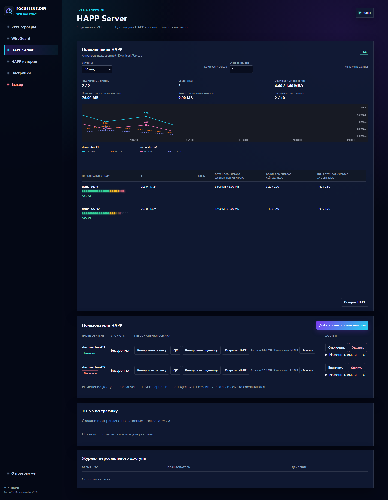
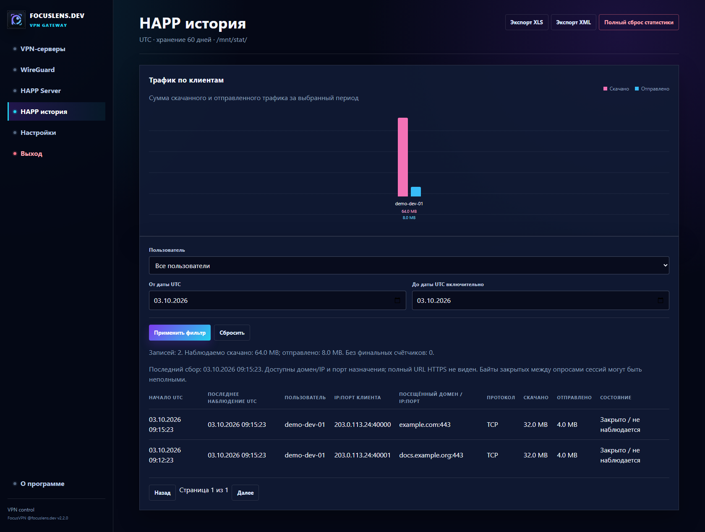

FocusVPN / 2026-10-10
FocusVPN v2.2.0
Единый VPN-шлюз: управление WireGuard, VLESS и HAPP с персональными подписками, учётом трафика и историей скорости Download/Upload.
- HAPP показывает Download и Upload одновременно: отдельные цветные линии по клиентам.
- Импорт TLS-профилей поддерживает SPKI SHA-256 pin без отключения проверки сертификата.
- История HAPP получила экспорт XML, полный сброс и обновлённую страницу.
- HAPP Server: Trojan, Hysteria2 и TrustTunnel для персональных пользователей.
Секреты, runtime базы, UUID и Reality keys не включены. В репозитории находятся рабочие скрипты и placeholders для controlled deployment.
Интерфейс
Скриншоты v2.2.0 собраны с renderer и обезличенными fixtures. Production credentials и пользовательская история не публикуются.


Границы проверки
Наблюдаемые счётчики не являются точным биллингом. Импорт внутри Windows HAPP, доставка Mattermost и внешний WireGuard egress требуют отдельной клиентской или сетевой проверки. Панель доступна по HTTPS на адресе IP установленного сервера и порту 7445; для IP используется самоподписанный сертификат. Backend HTTP 9443 слушает только loopback за Nginx; setup API wg-easy 51821 извне закрыт.